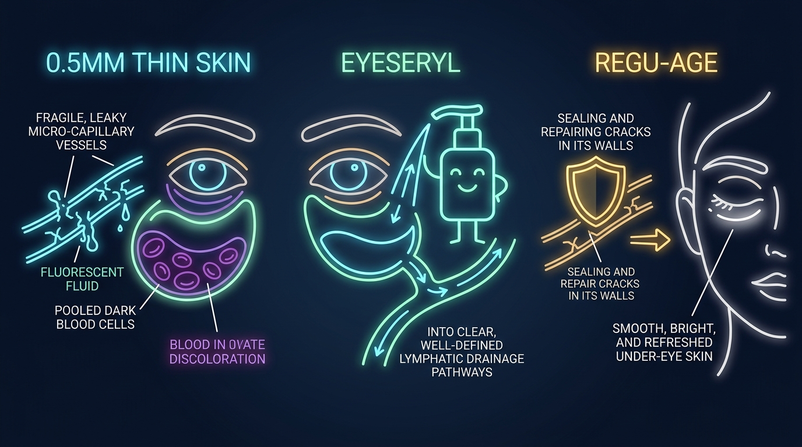

L'Aquarium à Paroi Fine et la Pompe de Microdrainage
Comparaison entre la stase vasculaire dans une peau de 0,5 mm et le microdrainage peptidique.

De nombreuses personnes découvrent chaque matin des ombres sombres et des poches gonflées sous leurs yeux. La plupart pensent que ces cernes résultent d'un manque de sommeil ou d'une pigmentation cutanée. Les études dermatologiques démontrent que cette idée est scientifiquement fausse.
La peau entourant les yeux présente une structure biologique à part. Les crèmes éclaircissantes habituelles n'ont aucune prise sur les cernes. Appliquer un dépigmentant sur des cernes vasculaires équivaut à peindre la vitre d'un aquarium dont l'eau intérieure est trouble.
Cet article examine le comportement du tissu périorbitaire, la raison des reflets violets et la façon dont les peptides vasculaires restaurent le drainage.
1. La Barrière de 0,5 Millimètre et 20 000 Battements Quotidiens
L'épaisseur de la peau change fortement selon les zones du corps humain. La peau de la plante des pieds peut atteindre 4,0 millimètres. En revanche, la peau située sous les yeux ne mesure que 0,5 millimètre. Cela correspond à l'épaisseur de trois feuilles de papier. C'est le tissu le plus fin du corps.
Cette zone est dépourvue de deux remparts biologiques essentiels :
- Zéro Graisse Sous-Cutanée: Le coussin adipeux est quasiment inexistant pour masquer le réseau veineux.
- Zéro Glande Sébacée: Le contour des yeux ne sécrète presque aucun sébum protecteur. Il se déshydrate et perd son élasticité beaucoup plus vite.
En même temps, cette zone fragile subit un travail intense. Un être humain cligne des paupières entre 15 000 et 20 000 fois par jour. Le muscle circulaire de l'œil (orbicularis oculi) effectue plus de 7,3 millions de micro-contractions par an. Ces mouvements continus fatiguent les micro-vaisseaux sous le derme translucide.
2. L'Effet Tyndall : Pourquoi les Cernes Paraissent Bleus et Violets
Si les cernes étaient causés par de la mélanine brune, les crèmes dépigmentantes fonctionneraient. Or, plus de 80% des cernes sont d'origine vasculaire et non pigmentaire.
Sous cette fine peau de 0,5 mm se trouve un réseau dense de micro-capillaires. Ces vaisseaux microscopiques sont fragiles. Sous la fatigue ou la pression, des globules rouges s'échappent dans l'espace extracellulaire.
Hors des vaisseaux, les globules rouges perdent leur oxygène. L'hémoglobine désoxygénée vire au pourpre foncé. Comme la peau est très fine et transparente, la lumière traverse le tissu et rebondit sur ces cellules sanguines stagnantes.
Cette diffusion de la lumière obéit à une règle physique appelée Effet Tyndall : les ondes rouges longues traversent le tissu, mais les ondes bleues courtes sont renvoyées vers l'œil de l'observateur. Le sang stagné sous la peau translucide paraît ainsi sombre, bleuté ou violacé.
3. La Stase Matinale : Un Réseau de Drainage Sans Pompe
Pourquoi les poches sous les yeux sont-elles plus gonflées au réveil le matin ?
L'organisme évacue les surplus d'eau et les déchets métaboliques grâce au système lymphatique. Contrairement au réseau sanguin animé par le cœur, le système lymphatique ne dispose d'aucune pompe mécanique. Il dépend de la gravité et des mouvements musculaires du corps.
Pendant la journée en position debout, la pesanteur entraîne les fluides vers le bas. En position allongée pendant huit heures de sommeil, la gravité cesse d'agir. Le liquide s'infiltre à travers les capillaires perméables et s'accumule dans le tissu périorbitaire lâche.
Au lever, cette stase forme un œdème visible (la poche). Sans évacuation active, cette accumulation distend la peau et détruit le réseau de collagène au fil du temps.
Réparation de la Microcirculation, Livrée
Le duo tétrapeptide Eyeseryl® et Regu-Age® décrit ci-dessus est le système actif d'Eyelasticity™. Il cible le drainage lymphatique que laisse l'effet Tyndall, pas la mélanine.
Voir l'OffreGarantie de remboursement de 67 jours • nous pouvons recevoir une commission
4. Pourquoi les Crèmes pour le Visage Échouent Sous les Yeux
Utiliser des crèmes riches ordinaires sur le contour des yeux aggrave souvent la situation :
- Risque de Grains de Milium: Les huiles minérales épaisses obstruent les micro-pores de la peau de 0,5 mm, formant de petits kystes blancs.
- Augmentation du Poids Hydrique: Les crèmes occlusives retiennent l'eau dans le tissu lâche sans l'évacuer, ce qui amplifie le gonflement matinal.
- Aucune Action Vasculaire: Les soins hydratants ordinaires ciblent l'épiderme superficiel mais ne peuvent ni colmater les capillaires ni activer la lymphe.
Voie de Fuite Vasculaire
- 1. Les micro-capillaires fragiles laissent fuiter des hématies.
- 2. L'hémoglobine désoxygénée stagne sous la peau de 0,5 mm.
- 3. L'effet Tyndall diffuse des reflets violacés et favorise l'œdème.
Voie de Microdrainage Peptidique
- 1. Regu-Age® consolide et scelle les parois capillaires fragiles.
- 2. Eyeseryl® stimule les micro-pompes d'évacuation lymphatique.
- 3. Les fluides stagnants sont évacués, dissipant cernes et poches.
| Critère Périorbitaire | Peptides Vasculaires Ciblés (Eyeseryl + Regu-Age) | Crèmes Visage Habituelles (Lipides Épais) |
|---|---|---|
| Pénétration Tissulaire | Absorption Sous-Dermique Rapide (adaptée à 0,5 mm) | Occlusion en Surface (Trop dense pour la zone oculaire) |
| Drainage Lymphatique | Évacuation Active des Liquides (réduction de l'œdème) | Nulle (Aucun effet sur les fluides stagnants) |
| Renfort Capillaire | Renforce les Micro-Vaisseaux (stoppe les fuites) | Nulle (Incapable de réparer les brèches) |
| Risque de Milium | Zéro (Matrice sérum aqueuse ultralégère) | Élevé (Paraffines obstruant les micro-pores) |
| Action Principale | Microcirculation, fuites vasculaires et rétention lymphatique | Hydratation superficielle de l'épiderme |
5. L'Approche Peptidique : Eyeseryl® Tétrapeptide et Regu-Age®
La biochimie cosmétique contemporaine utilise des peptides capables d'agir sur les causes réelles des cernes :
- Eyeseryl® (Acétyl Tétrapeptide-5) : Ce peptide relance les contractions des vaisseaux lymphatiques périorbitaires. Lors d'essais cliniques sur sujets humains, Eyeseryl a réduit le volume des poches jusqu'à 70% en 15 à 28 jours en chassant les liquides interstitiels retenus.
- Regu-Age® (Peptides de Soja et Riz + Oxydo-Réductases) : Ce complexe protège les parois endothéliales des capillaires. Les mesures cliniques confirment une diminution de la perméabilité capillaire de 33%, empêchant la fuite des hématies dans le tissu.
- Pro-Coll-One+® : Extrait de glycopeptides de soja purifiés, le fabricant indique qu'il stimule la production de collagène de Type I par les fibroblastes jusqu'à 1 190%. Il redensifie le matelas cutané de 0,5 mm pour rendre les veinules invisibles.
Cette triple synergie peptidique constitue le cœur actif de la formule Eyelasticity™ Age-Defying Eye Therapy. En colmatant les capillaires, en stimulant le flux lymphatique et en fortifiant le derme, elle efface cernes et poches sans irriter la peau.
Des Yeux Plus Nets, Garantie 67 Jours
Une formule ciblée plutôt qu'une crème visage générique. Couverte par une garantie de remboursement de 67 jours.
Voir l'OffreGarantie de remboursement de 67 jours • nous pouvons recevoir une commission
6. Foire Aux Questions (FAQ)
La peau sous les yeux ne mesure que 0,5 millimètre d'épaisseur et manque de graisse sous-cutanée. Lorsque les micro-capillaires fragiles fuient, le sang désoxygéné s'accumule sous le tissu. En raison de l'effet Tyndall, la lumière se disperse à travers la peau translucide et réfléchit des ondes courtes bleues et violettes plutôt que de la mélanine.
Non. Les crèmes de jour ou de nuit épaisses contiennent des lipides denses qui restent en surface sans pénétrer la peau fine du contour des yeux, ce qui favorise les grains de milium. Les poches exigent des peptides vasculaires ciblés comme Eyeseryl et Regu-Age pour sceller les parois capillaires et activer le drainage lymphatique.
Rétablir la Microcirculation Périorbitaire
Formulé dans Eyelasticity™ avec Eyeseryl®, Regu-Age® et une garantie de satisfaction de 67 jours.
Visiter la Boutique Officielle Eyelasticity